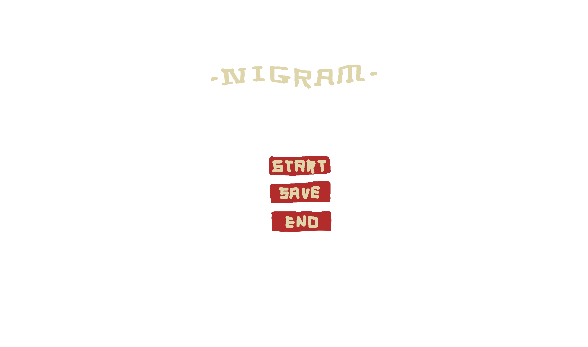
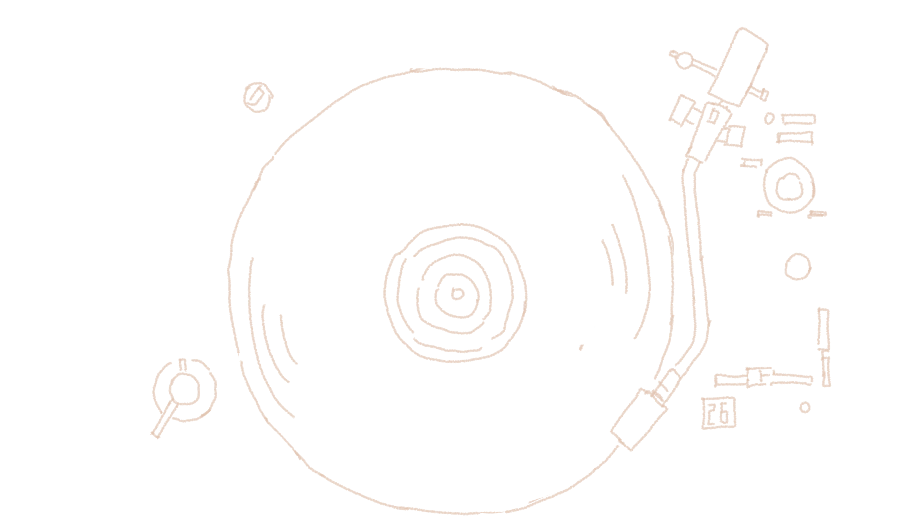
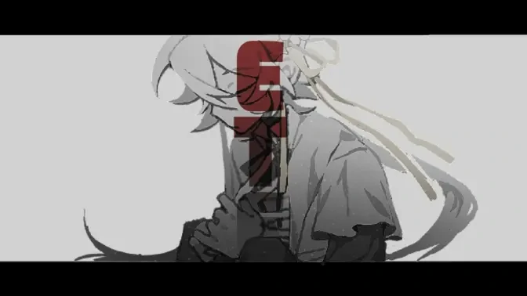
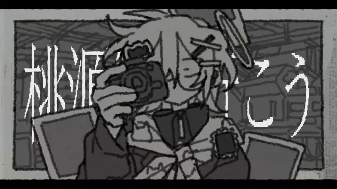
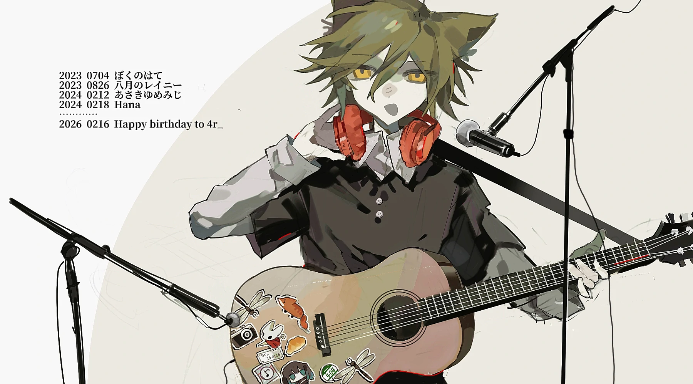
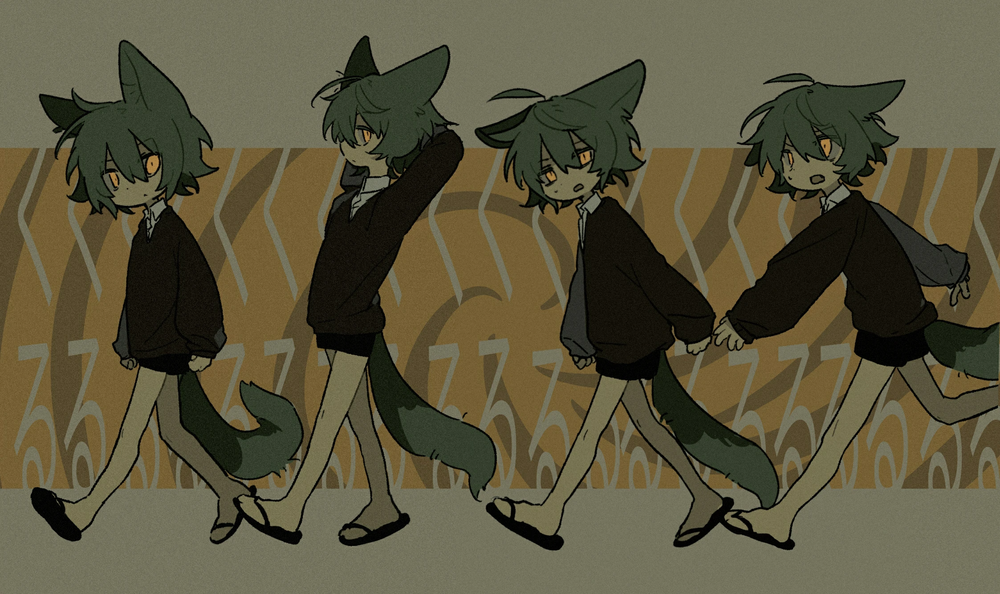
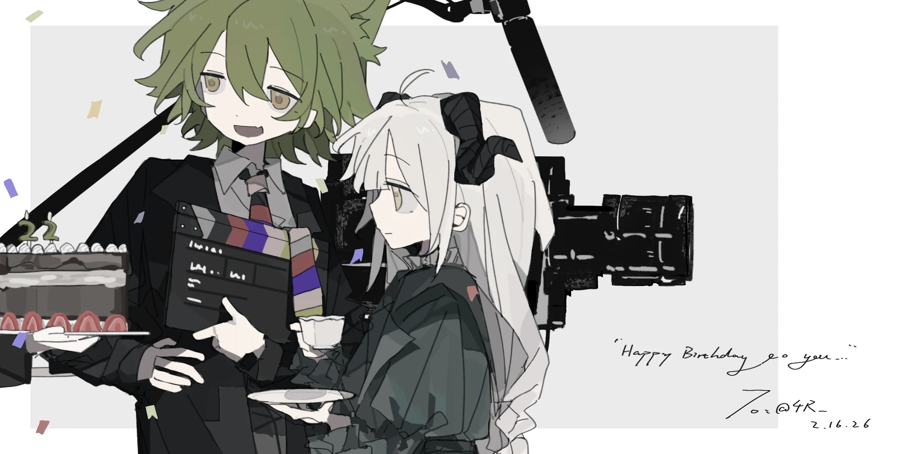
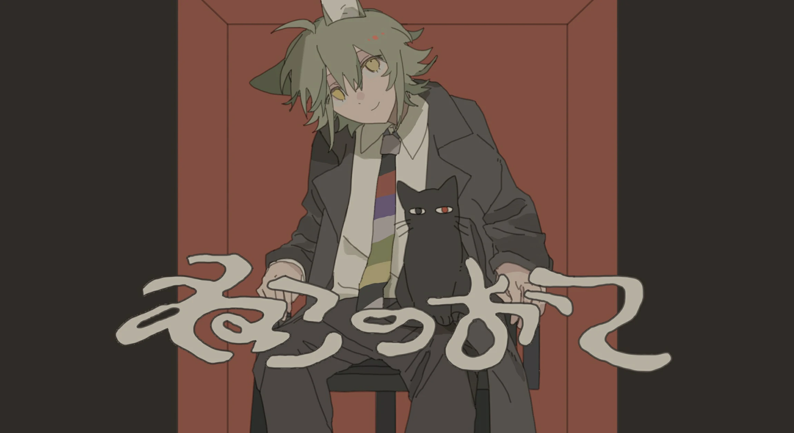

💚🦊tsume：
乐天轻浮派，但会认真地对待创作。剧组中担任导演编剧演员等职位，比较沉浸在自己的艺术里jpg
人见人爱花见花开的lmh#家中耀祖##美系男子##屌丝男#
🤍🐏U0：
沉稳靠谱派，温柔长女气质。剧组中负责美术演员等职位。
濒死的家女,有篡位耀祖之势#家中明珠##作者可能是头上长东西爱好者#


这里是 UTAU 相关内容的展示区域。
已配布UST：




你好，这里是4R。
联系方式：
哔哩哔哩：@4R_
感谢你访问我的个人站！